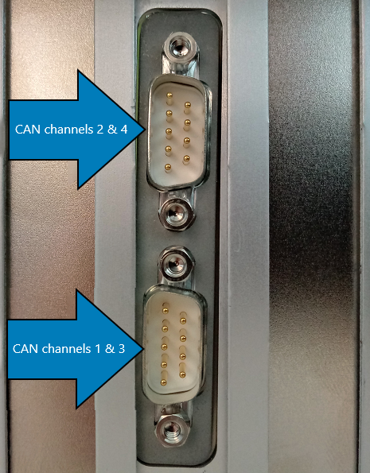
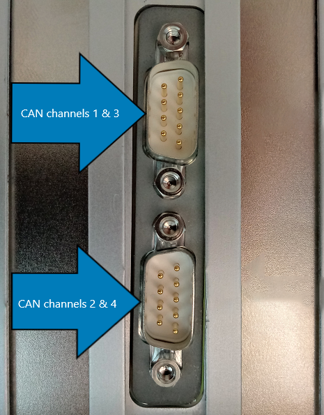
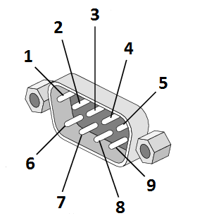

IO612 Pin Mapping
IO612 Pin Mapping — Reference information about the I/O module connector
Channel Location
When the IO612 is plugged into a Speedgoat Performance real-time target machine, the CAN channels are ordered as shown below:

![[Note]](images/note.png) | Note |
|---|---|
For the IO612-P I/O module, the CAN channels are ordered as follows: |

| Note |
|---|---|
When using the CAN Splitter cable, the CAN channel assignment is:
|
Connector Pin Mapping
The following figure shows the pin numbering of a DB9 connector when looking from the front (outside of the target machine).

The pin mapping of the two connectors is identical and is listed in the following table:
| Pin | CAN channel 1&3 | CAN channel 2&4 |
|---|---|---|
| 1 | CAN channel 3 Low | CAN channel 4 Low |
| 2 | CAN channel 1 Low | CAN channel 2 Low |
| 3 | GND on channel 1 | GND on channel 2 |
| 4 | CAN channel 3 High | CAN channel 4 High |
| 5 | GND on channel 3 | GND on channel 4 |
| 6 | - | - |
| 7 | CAN channel 1 High | CAN channel 2 High |
| 8 | - | - |
| 9 | - | - |
For proper operation, a CAN topology requires electrical termination in the form of resistors.
The IO612 I/O module does not include termination resistors. The full resistor comes with the CAN module loopback cable provided by Speedgoat.